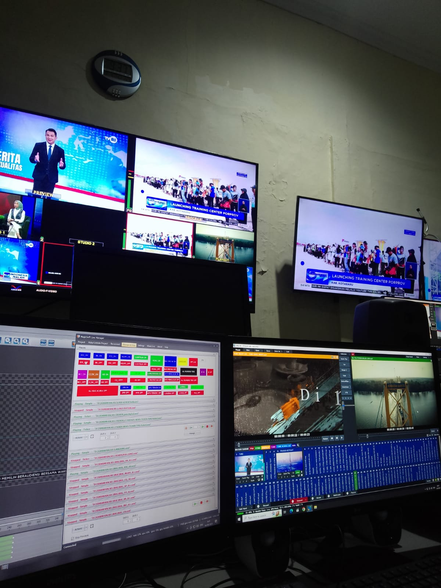

Marcell Aulia
Halo, saya Marsel. Saya adalah siswa magang di bidang Teknisi dan Tim Komunikasi & Media Baru (KMB) di TVRI Kalimantan Selatan. Portofolio ini berisi pengalaman dan keterampilan saya selama Prakerin di bidang teknisi siaran utama serta media digital.
Pengalaman Prakerin
Produksi Konten Siaran "Berita Pagi"
Terlibat dalam proses pra-produksi, syuting, dan pasca-produksi untuk segmen berita. Mempelajari alur kerja tim kreatif dan teknis.
Manajemen Media Sosial TVRI"
Membantu tim KMB dalam merencanakan, membuat, dan mengunggah konten untuk akun media sosial resmi, seperti Instagram dan TikTok.
Teknisi Siaran Utama"
Membantu teknisi siaran dalam mengoperasikan peralatan audio dan video selama proses produksi dan siaran berlangsung.
Moment Spesial

Foto ini adalah moment paling berharga untuk saya selama prakerin TVRI Kalimantan Selatan sebagai Kameramen.

Selama Prakerin, saya diberi pengalaman dalam dokumentasi, media digital, serta pekerjaan teknisi

Di MCR saya diberi kepercayaan untuk mengoprasikan MagicShoft chargent

Mendapatkan pengalaman berharga dalam mengoperasikan peralatan TVRI di Kantor sebagai Teams KMB.

Foto ini menunjukan saya saat bertugas di teknisi siaran utama yaitu MCR
Hubungi Saya
Tertarik untuk berkolaborasi atau sekadar ingin terhubung? Silakan hubungi saya melalui: